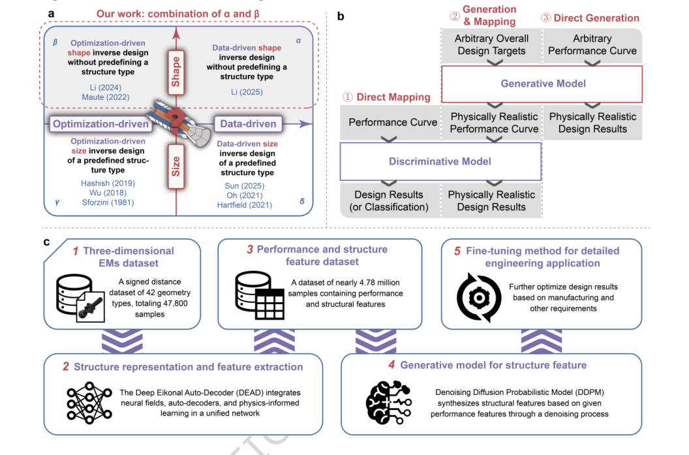

正在阅读 2026-10-01 · 第 1 批 归档。返回最新一期
每日论文推荐
检索本期论文
开启 JavaScript 后可使用筛选与排序。论文与目录可直接阅读。
本期推荐正在准备 可先浏览历史归档，或查看来源状态。
没有符合条件的论文 试试其他关键词，或减少筛选条件。
清除筛选
Nature Portfolio（CNS） 2026-07-22 CNS 子刊 结构生成式设计与可靠性优化
Generative AI empowered inverse design of 3D energetic material structures for customizable combustion
Li, Wentao, Zhang, Yiyi, Zheng, Hanyun 等 Communications Engineering
全文精读已完成 · 原文有缺项
资料核对说明 图12a图注原页列出10、3、4、5、10、2、3、6类，合计43，但同时称总数为42。属于已核实的原页计数不一致，而非页面不清；现有资料不能确定哪个分项应修正，影响几何类型组成的准确复核，不影响本页现有内容识读。 “Measures of performance matching degree”首段在原页将计算曲线和目标曲线均标为p_T(t)，而式(14)—(16)明确分别使用p(t)和p_T(t)。属于原文符号误标，不是提取错误；影响两条曲线的身份区分，但后续公式可读且无需补造。 参考文献17在原页以“Defence Technology, (2025).”结束，未提供卷号、页码、文章号或DOI。该条书目信息不完整已由原页核实，但不能据此判断文献不存在或研究结论错误；影响精确定位与核验。无公式或图号涉及，页面仍可阅读。 依据所提供的全文逐页笔记，本文围绕含能材料点燃后能量释放难以精确调控的问题，将物理约束神经场、条件扩散生成与优化微调结合，由目标压力—时间曲线反求三维药柱结构。数值案例展示了性能匹配、装填率与几何约束之间的权衡，但微调并非逐例提高匹配度。作者明确承认尚需高保真模拟与实验验证，因此宜作为生成式结构逆设计的方法论文阅读，而非工程可靠性证明。

查看大图
Fig. 2 · 电磁结构的逆向设计方法
图解：原图对比电磁结构逆向设计的方法。各路径的输入、设计过程和输出关系以原图标注为准。
Li, Wentao et al.原文图页 · CC BY-NC-ND 4.0
依据论文全文整理。解读与建议不代表作者结论。 论文依据 1
中文导读
依据所提供的全文逐页笔记，本文围绕含能材料点燃后能量释放难以精确调控的问题，将物理约束神经场、条件扩散生成与优化微调结合，由目标压力—时间曲线反求三维药柱结构。数值案例展示了性能匹配、装填率与几何约束之间的权衡，但微调并非逐例提高匹配度。作者明确承认尚需高保真模拟与实验验证，因此宜作为生成式结构逆设计的方法论文阅读，而非工程可靠性证明。
阅读建议 推荐重点阅读结构表示、条件生成和约束微调的衔接方式，以及重复运行和基线比较；这些内容直接服务生成式结构设计，但不能替代结构安全与燃烧实验验证。[P9–P13][P20][P25–P28]
作者 Li, Wentao, Zhang, Yiyi, Zheng, Hanyun, He, Yunqin, Liang, Guozhu
结构生成式设计与可靠性优化
OpenAlex 2026-09-29 结构疲劳与可靠性
Toward Intelligent Fatigue Management of Welded Metal Sheet Structures by Integrating Simulation, Sensing, and Machine Learning
Yingjin Cheng, Zongwu Niu, Yujia Yang 等 Materials
摘要解读已完成，全文待补充
焊接金属薄板虽兼具高强度与轻量化优势，但焊缝几何与制造缺陷的相互作用使疲劳寿命预测面临挑战。本文是一篇综述，梳理焊接工艺、疲劳机制、计算模型及监测技术，并将工艺选择、寿命预测、实验验证和结构健康监测纳入仿真—传感—机器学习闭环。其重点是连接传统物理建模与数据驱动维护，而非报告新算法的实验性能。以下仅依据摘要解读，无法核实全文案例、量化收益或框架实施细节。[摘要]
原图待获取 · 查看原文
依据公开摘要整理，未核验全文细节。解读与建议不代表作者结论。 论文依据 1
中文导读
焊接金属薄板虽兼具高强度与轻量化优势，但焊缝几何与制造缺陷的相互作用使疲劳寿命预测面临挑战。本文是一篇综述，梳理焊接工艺、疲劳机制、计算模型及监测技术，并将工艺选择、寿命预测、实验验证和结构健康监测纳入仿真—传感—机器学习闭环。其重点是连接传统物理建模与数据驱动维护，而非报告新算法的实验性能。以下仅依据摘要解读，无法核实全文案例、量化收益或框架实施细节。[摘要]
阅读建议 推荐作为焊接薄板疲劳可靠性与智能运维交叉研究的路线梳理材料，重点关注物理模型、监测数据及维护预测如何衔接；不宜仅凭摘要将其视为已验证的新算法或生成式设计成果。[摘要]
作者 Yingjin Cheng, Zongwu Niu, Yujia Yang, Yangwei Wang
研究问题 论文关注焊接金属薄板的长期结构稳定性，指出疲劳裂纹扩展受到焊缝几何与制造缺陷相互作用的强烈影响。原文强调“fatigue failure remains a persistent concern”。解读：核心问题是如何贯通制造因素、损伤演化与寿命管理，而非只预测单一工况下的寿命。[摘要]
方法与路线 作为综述，本文梳理激光束焊、电阻点焊、钨极惰性气体保护焊及激光—电弧复合焊，并考察有限元、内聚区、晶体塑性和多物理场／多尺度模拟，同时覆盖实验表征与结构健康监测。摘要未交代文献检索、筛选标准及比较流程，不能据此认定其为系统综述。[摘要]
创新与比较 作者声称，相较于分别讨论传统方法与数据驱动方法的既有综述，本文以薄焊接板为对象，将工艺选择、寿命预测、实验验证及健康监测组织为“single closed-loop”框架。解读：特色在于综述视角的整合；摘要不足以证明其提出或实现了原创算法。[摘要]
证据与发现 摘要指出，机器学习赋能的数字孪生与传感器融合框架能够改善疲劳损伤检测和维护预测，原文使用“improve fatigue damage detection and maintenance prediction”。这是综述层面的结论性陈述，未提供提升幅度、对照方法或验证规模，不能转述为定量实验成果。[摘要]
局限与边界 作者明确指出环境退化与微观组织演化的准确预测仍具挑战，原文为“remains challenging”。资料层面，摘要没有给出适用工况、误差指标、数据需求或闭环部署结果，因此无法判断各类模型的可靠性边界；这些信息缺口不能直接认定为全文缺陷。[摘要]
方向关联 解读：传感融合、数字孪生及维护预测与智能运维直接相关，疲劳寿命建模与损伤监测则切合可靠性研究。焊接工艺选择也可为结构设计提供制造约束，但摘要未涉及生成式设计、优化目标或设计搜索算法，因此与生成式设计方向的联系仅属间接启发。[摘要]
后续研究建议 建议：后续阅读全文时，优先核查闭环框架的数据流、实验验证及维护决策接口。可迁移研究设想是针对具体焊接薄板构件，结合物理寿命模型与监测数据开展更新预测，并检验环境变化下的泛化能力；这是研究建议，不是作者已完成的工作或已证实的效果。[摘要] AI 智能运维 结构生成式设计与可靠性优化 结构疲劳与可靠性
Elsevier / Scopus 2026-10-01 AI 智能运维
A Physics-Informed Deep Encoding-Parsing Network for Cross-Domain Bearing Fault Diagnosis Under Noisy Sensor Data
Tan J. Journal of Computing and Information Science in Engineering
摘要解读已完成，全文待补充
本文针对工况变化与传感器噪声影响下的轴承零样本故障诊断，提出物理信息机器学习方法。作者将相关分析操作融入神经网络，通过物理信息引导故障属性分离，并利用故障轴承周期性脉冲特征构建深度编码—解析网络。[摘要]报告该方法在未知域和含噪条件下优于对比方法，但未提供具体指标与实验设置。跨设备应用被表述为潜力，不能视为已完成验证的结论。
原图待获取 · 查看原文
依据公开摘要整理，未核验全文细节。解读与建议不代表作者结论。 论文依据 1
中文导读
本文针对工况变化与传感器噪声影响下的轴承零样本故障诊断，提出物理信息机器学习方法。作者将相关分析操作融入神经网络，通过物理信息引导故障属性分离，并利用故障轴承周期性脉冲特征构建深度编码—解析网络。[摘要]报告该方法在未知域和含噪条件下优于对比方法，但未提供具体指标与实验设置。跨设备应用被表述为潜力，不能视为已完成验证的结论。
阅读建议 推荐重点关注相关分析与周期性脉冲物理特征如何参与跨域诊断，契合智能运维研究；但性能优势及跨设备适用性仍需全文证据核验。[摘要]
研究问题 研究问题是如何在工况变化、目标域未知且传感器数据含噪时实现轴承故障诊断。[摘要]指出既有跨工况零样本方法“require numerous learning samples”，且未充分建模失效物理机制与噪声特征。解读：核心矛盾是诊断模型对学习样本的依赖与跨域适应需求之间的不匹配。
方法与路线 方法包括将相关分析操作嵌入神经网络，建立自动物理信息学习模块，以物理信息引导轴承故障特征解耦与属性分离；再利用故障轴承周期性脉冲的物理特征，设计深度编码—解析网络，自动生成故障属性并分析失效特征。[摘要]未说明网络结构、损失函数及训练流程。
创新与比较 摘要所呈现的方法特色是将相关分析、故障属性分离和周期性脉冲特征结合，而非仅依赖数据驱动分类。[摘要]使用“fault attribute separation guided by physical information”描述其中机制。解读：创新关注点在物理知识参与表示学习的方式，但仅凭摘要无法确认其相对既有工作的原创程度。
证据与发现 作者报告，与先进方法的比较显示，该方法在未知域中具有更好表现，且含噪传感器数据下仍保持优势。[摘要]明确写道“outperforms other methods in unknown domains”。但摘要没有准确率、噪声强度或统计结果；跨设备应用仅被描述为潜力，不能据此认定已实现无数据自适应诊断。
局限与边界 当前仅有摘要，不能确认实验使用的数据集、故障类别、工况划分、噪声类型及基线公平性，也无法判断优势大小与稳定性。[摘要]未提供这些信息。解读：这是现有资料的证据边界，不等同于作者承认的方法缺陷；物理信息模块是否真正贡献性能仍需消融证据核验。
方向关联 论文直接关联智能运维中的轴承状态识别与跨工况模型迁移，研究对象是设备振动信号故障诊断。[摘要]以提升复杂设备运行安全为背景。解读：诊断结果可为可靠性研究提供状态信息，但摘要未涉及寿命预测、失效概率估计或结构优化，不能将其成果直接扩展为可靠性设计方法。
后续研究建议 建议阅读全文时优先核查零样本设定、训练样本需求、未知域划分及噪声注入方式，并寻找物理信息模块和编码—解析结构的消融实验。建议进一步区分跨工况验证与跨设备验证，核实后者是否仅为展望；这些是依据摘要证据缺口提出的阅读与研究建议，不是作者已完成的工作。 AI 智能运维
AI 顶会论文 2026 ICLR 2026 · 主会论文 结构生成式设计与可靠性优化
Siddhartha Laghuvarapu, Ying Jin, Jimeng Sun ICLR 2026
暂时无法获取资料 · 将自动重试
暂无可用摘要，请查看原文。
原图待获取 · 查看原文
摘要
暂无可用摘要，请查看原文。
结构生成式设计与可靠性优化
OpenAlex 2026-09-30 结构疲劳与可靠性
Physics-Informed Machine Learning for Fatigue and Fracture Analysis and Prediction: A Scoping Review
Rogério Atem de Carvalho, Larissa Gomes Simão, Eduardo Atem de Carvalho Applied Sciences
摘要解读已完成，全文待补充
本文是一篇范围综述，梳理物理信息机器学习在疲劳寿命、裂纹扩展、损伤力学及健康监测中的应用。摘要称检索获得“124 records”，其中“76 primary research articles”被纳入，并按物理知识进入数据、损失函数和网络结构的方式分类。文献报告了稀疏数据泛化、计算效率和不确定性量化方面的收益，也暴露训练成本与迁移困难。本文适合作为疲劳可靠性与智能运维的方法导航，但本次仅依据摘要，不能核验各方法的实际性能。[摘要]
原图待获取 · 查看原文
依据公开摘要整理，未核验全文细节。解读与建议不代表作者结论。 论文依据 1
中文导读
本文是一篇范围综述，梳理物理信息机器学习在疲劳寿命、裂纹扩展、损伤力学及健康监测中的应用。摘要称检索获得“124 records”，其中“76 primary research articles”被纳入，并按物理知识进入数据、损失函数和网络结构的方式分类。文献报告了稀疏数据泛化、计算效率和不确定性量化方面的收益，也暴露训练成本与迁移困难。本文适合作为疲劳可靠性与智能运维的方法导航，但本次仅依据摘要，不能核验各方法的实际性能。[摘要]
阅读建议 推荐重点阅读其物理知识注入分类及疲劳预测、健康监测应用梳理，用于建立选型框架；摘要未给出定量对比，不宜据此认定某类模型优于其他方法。[摘要]
研究问题 研究问题是厘清物理信息机器学习在疲劳与断裂领域的研究范围及知识缺口，而非验证单一预测模型。摘要列出“fatigue life prediction”等任务，并覆盖裂纹传播、多轴疲劳及健康管理。解读：其主要价值是把分散的应用组织成可检索、可比较的研究地图。[摘要]
方法与路线 综述结合核心术语与扩展同义词检索，辅以前后向引文追踪及高产出版渠道的人工筛查。摘要称纳入“76 primary research articles”，再用观察、学习和归纳三类偏置描述物理知识的注入方式。摘要未提供数据库、完整检索式及具体纳入标准，尚不能复核筛选过程。[摘要]
创新与比较 摘要中的“三类偏置”对应数据层约束、损失函数修改与结构架构变化，并据此整理不同网络形式。解读：这种组织方式有助于跨模型名称比较物理信息的作用位置；但摘要未证明分类框架由作者首次提出，也未展示原创算法，不能将其直接认定为方法创新。[摘要]
证据与发现 摘要称既有研究报告了稀疏、含噪实验数据上的泛化改善、相对传统仿真的计算收益及预测不确定性量化，并使用“are reported to”限定这些发现。这里是综述对纳入文献的归纳，不是作者新开展的对比实验；摘要没有效应大小、误差指标或统一测试结果。[摘要]
局限与边界 摘要明确列出“high training costs”，以及超参数和损失权重敏感、跨问题配置迁移有限、深度模型黑箱性等领域挑战。另就当前资料而言，缺少全文使我们无法核验研究质量评价、任务间差异及结论适用条件；这属于摘要级解读的证据限制，不是已证实的论文缺陷。[摘要]
方向关联 摘要直接覆盖“prognostics and health management”和结构健康监测，因此与智能运维及疲劳可靠性方向明确相关。解读：疲劳寿命和裂纹演化预测可为检修与结构安全分析提供模型基础，但摘要没有展示维护决策收益、可靠度计算或结构优化结果，不能外推为已验证应用。[摘要]
后续研究建议 作者提出可泛化和自适应架构、多尺度多物理场建模及标准化基准的后续议程。建议：围绕同一疲劳数据集比较数据约束、损失约束和结构约束，统一记录预测误差、训练成本与不确定性校准，并设置跨工况测试；这是可迁移研究设想，不是论文已完成的实验。[摘要] AI 智能运维 结构疲劳与可靠性
本期暂无符合条件的新核心推荐，可浏览扩展阅读与历史归档。
arXiv 2026-09-29 预印本版本 大模型 智能体 结构生成式设计与可靠性优化
Concealing LLM-Based Multi-Agent Topology via Phantom Structure Injection
Longzhu He, Zelang Wen, Xinfeng Li 等
摘要解读已完成，全文待补充
多智能体系统的推理轨迹可能暴露通信拓扑，带来架构知识产权泄露与系统弱点暴露风险。本文提出MIRAGE，在保留真实拓扑执行任务的同时，将攻击者可见的语义证据引向幻影拓扑。框架包括幻影拓扑合成、语义边实现和受保护系统执行三个阶段。作者报告在三个拓扑优化框架、四个基准数据集上降低了拓扑推断攻击效果，并大体保留任务效用；摘要未给出具体数值。[摘要]本解读仅依据摘要。
依据公开摘要整理，未核验全文细节。解读与建议不代表作者结论。 论文依据 1
中文导读
多智能体系统的推理轨迹可能暴露通信拓扑，带来架构知识产权泄露与系统弱点暴露风险。本文提出MIRAGE，在保留真实拓扑执行任务的同时，将攻击者可见的语义证据引向幻影拓扑。框架包括幻影拓扑合成、语义边实现和受保护系统执行三个阶段。作者报告在三个拓扑优化框架、四个基准数据集上降低了拓扑推断攻击效果，并大体保留任务效用；摘要未给出具体数值。[摘要]本解读仅依据摘要。
阅读建议 建议作为多智能体系统安全与架构保密方向的补充阅读：其真实通信结构与外部语义证据分离的机制明确，但与生成式结构设计并不直接契合，暂不宜列为该方向的核心推荐。[摘要]
作者 Longzhu He, Zelang Wen, Xinfeng Li, Sen Su, XiaoFeng Wang
研究问题 研究问题是如何避免多智能体系统的通信拓扑被黑盒攻击者推断。摘要指出攻击可利用“semantic dependencies in observable reasoning traces”，而拓扑可能承载专有架构知识。[摘要]解读：保护对象不仅是回答内容，还包括推理轨迹暴露的智能体协作关系。
方法与路线 MIRAGE包含“phantom topology synthesis”、语义边实现和受保护系统执行三个阶段。它构造不同于真实结构的幻影拓扑，将幻影边实现为可信的语义依赖，并抑制可能暴露真实边的来源特定线索。[摘要]摘要未说明具体合成算法、提示策略或执行协议。
创新与比较 摘要所述机制特点是保留真实通信拓扑完成任务，同时把攻击者可见证据导向幻影结构，即“shaping adversary-facing semantic evidence”。[摘要]解读：其思路区别于直接改变真实协作网络，但摘要不足以确认相对既有防御的首创性或完整创新边界。
证据与发现 作者报告实验覆盖三个拓扑优化框架和四个基准数据集，并称方法“substantially reduces”拓扑推断攻击效果，同时大体保留任务效用。[摘要]这些是定性结果；摘要没有攻击成功率、效用变化或统计信息，因此无法判断收益幅度和不同配置下的稳定性。
局限与边界 当前资料的限制是仅有摘要，而非已证实的方法缺陷。摘要未交代攻击者能力、基线设置、数据集名称及额外执行开销，也未给出“大体保留”效用的量化标准。[摘要]解读：尚不能据此评价防御面对自适应攻击的持续有效性或工程部署成本。
方向关联 解读：该方法可关联智能运维中的多智能体诊断系统，启发对外推理记录与内部协作架构分离的安全设计，但摘要未验证此场景。[摘要]它研究通信结构保密，并非生成式结构设计；任务效用保持也不能直接视为工程结构可靠性或运维可靠性的提升证据。
后续研究建议 建议重点核查全文中的幻影拓扑约束、语义依赖生成机制和来源线索抑制方式，再比较攻击效果、任务效用与运行开销。若迁移到智能运维，建议测试诊断准确性、日志可审计性及自适应攻击下的表现。这些是后续研究设想，并非摘要已经报告的验证结果。[摘要] 结构生成式设计与可靠性优化
OpenAlex 2026-09-28 结构疲劳与可靠性
Recent advances in machine learning for the design and performance prediction of corrosion inhibitors
International Journal of Corrosion and Scale Inhibition
摘要解读已完成，全文待补充
本文为综述与研究汇编，讨论人工智能、机器学习和高通量实验如何支持腐蚀评估及缓蚀剂设计，涉及金属、钢筋混凝土和生物医用合金。摘要列举多种预测方法及缓蚀材料案例，并强调理论描述符、图像与深度学习的结合。其价值在于连接材料筛选、退化检测和结构健康监测，但摘要未给出模型精度、实验条件或定量比较，不能据此确认性能优势。[摘要]
依据公开摘要整理，未核验全文细节。解读与建议不代表作者结论。 论文依据 1
中文导读
本文为综述与研究汇编，讨论人工智能、机器学习和高通量实验如何支持腐蚀评估及缓蚀剂设计，涉及金属、钢筋混凝土和生物医用合金。摘要列举多种预测方法及缓蚀材料案例，并强调理论描述符、图像与深度学习的结合。其价值在于连接材料筛选、退化检测和结构健康监测，但摘要未给出模型精度、实验条件或定量比较，不能据此确认性能优势。[摘要]
阅读建议 建议作为智能运维与腐蚀防护交叉研究的综述线索阅读，重点核查退化检测和缓蚀剂预测案例；摘要提及“structural health monitoring”，但尚不足以支持工程部署判断。[摘要]
研究问题 论文关注腐蚀评估与缓蚀剂设计中的预测问题，对象覆盖金属、钢筋混凝土和生物医用合金，任务包括效率预测与结构退化检测。摘要使用“corrosion assessment”概括评估目标，但没有说明具体失效场景、预测时间尺度及现有方法的主要瓶颈。[摘要]
方法与路线 摘要列举“QSAR”、梯度提升、卷积神经网络及分子动力学，并提到无损检测、电化学方法和计算模拟。解读：这些内容体现统计学习与物理模拟的结合，不宜把分子动力学直接等同于机器学习；各方法是否构成统一流程，摘要未交代。[摘要]
创新与比较 摘要自称“review and research compilation”，因此应按综述与研究汇编理解，而非直接认定提出了新算法。解读：值得关注的是理论描述符、成像数据与深度学习之间的联系；但摘要未提供原创架构、独有数据集或相对既有综述的新增贡献证据。[摘要]
证据与发现 摘要称番石榴叶提取物、刚果红染料、杂化纳米复合材料和季铵盐等案例具有实验验证，并使用“high inhibition efficiencies”描述结果。不过未报告效率数值、材料环境、对照条件或重复性，因而只能确认其定性主张，不能比较不同缓蚀剂优劣。[摘要]
局限与边界 当前仅有摘要，不能确认全文如何处理数据质量、适用范围和验证偏差。摘要虽称“rapid, accurate”，却未提供误差指标、测试集划分或跨材料验证信息。上述属于现有资料的证据缺口，并非作者已承认的论文局限，也不能据此判定模型存在具体缺陷。[摘要]
方向关联 摘要明确提及“fatigue behavior”和结构健康监测，与智能运维、疲劳可靠性方向存在联系。解读：腐蚀预测可能为退化识别和维护决策提供输入，但摘要没有建立腐蚀状态到疲劳寿命或失效概率的定量关系，对结构设计的支持仍属潜在应用。[摘要]
后续研究建议 建议后续获取全文后，优先核查“experimental validation”对应案例的样本规模、实验条件与验证方式，再区分缓蚀效率预测和结构退化识别的证据。研究迁移可考虑将腐蚀状态与疲劳可靠性模型连接，但这是建议，不是摘要已经验证的成果。[摘要] AI 智能运维 结构疲劳与可靠性
Elsevier / Scopus 2026-10-01 AI 智能运维
An Evolutionary One-Shot Neural Architecture Search Method Based on Single-Path Cells Toward Physics-Informed Fault Diagnosis
Gao Y. Journal of Computing and Information Science in Engineering
摘要解读已完成，全文待补充
本文针对复杂装备故障诊断中的网络架构选择，提出基于单路径单元的进化式一次性搜索方法SPC-NAS，通过超网络设计、训练改进与约束进化搜索降低计算需求和预测偏差。[摘要]作者报告在CWRU数据集上以0.292 M参数达到“100%”准确率。[摘要]解读：其价值主要在自动架构设计，摘要仅称为未来融合物理信息方法提供基础，不能视为已完成物理融合或验证工程泛化。
依据公开摘要整理，未核验全文细节。解读与建议不代表作者结论。 论文依据 1
中文导读
本文针对复杂装备故障诊断中的网络架构选择，提出基于单路径单元的进化式一次性搜索方法SPC-NAS，通过超网络设计、训练改进与约束进化搜索降低计算需求和预测偏差。[摘要]作者报告在CWRU数据集上以0.292 M参数达到“100%”准确率。[摘要]解读：其价值主要在自动架构设计，摘要仅称为未来融合物理信息方法提供基础，不能视为已完成物理融合或验证工程泛化。
阅读建议 建议重点阅读其超网络训练与约束搜索设计，以判断能否迁移至轻量化智能运维；摘要提供了明确方法和结果，但物理信息融合及跨工况可靠性仍缺少证据。[摘要]
研究问题 研究问题是如何为复杂装备故障诊断自动选择合适网络架构。摘要指出计算资源限制及“deviation of supernet prediction”可能使搜索错过最佳架构。[摘要]解读：重点是搜索成本与性能估计可信度，而不是直接解决故障机理建模问题。
方法与路线 方法由三个环节组成：以“single-path cells”构建超网络，改进超网络训练以缩小一次性模型预测与独立模型准确率之间的偏差，再进行带约束的进化搜索。[摘要]摘要未说明候选操作、训练损失、约束内容或搜索预算，尚不足以复现。
创新与比较 作者将单路径单元超网络、预测偏差抑制训练和约束进化搜索组合为SPC-NAS，并称其超网络为“new supernet”。[摘要]解读：可关注这一组合是否改善候选架构评价与筛选，但摘要没有既有方法对照，不能据此确认各组成部分的原创程度。
证据与发现 摘要报告该方法能够为不同任务自动寻找最佳架构，并在CWRU数据集上以0.292 M参数达到“100%”准确率。[摘要]这提供了紧凑模型取得较高分类性能的结果线索；但未列出其他任务成绩，也未提供比较对象，不能确认优势幅度或最优性。
局限与边界 当前材料仅为摘要，未提供数据划分、重复试验、噪声条件及消融结果，因此无法判断结果稳定性或排除评价偏差。作者称其为“future integration”提供基础。[摘要]解读：不能将面向物理信息诊断的定位等同于已实现物理约束融合。
方向关联 与智能运维的联系直接体现在“fault diagnosis”及自动架构选择上。[摘要]解读：参数规模与搜索资源需求可能关联部署成本，但参数少不等于实测时延低。对可靠性研究的价值仍需鲁棒性证据；与结构设计的联系仅是优化思路迁移，摘要未涉及结构设计。
后续研究建议 建议后续阅读时核查超网络评价与独立训练结果的一致性、搜索约束定义，以及物理知识实际进入模型的位置。可进一步设计相同预算下的搜索对照与跨工况测试，评估准确率、搜索成本和稳定性。这些属于研究建议，不是摘要已完成的实验。 AI 智能运维
arXiv 2026-08-08 预印本版本 大模型 智能体 结构生成式设计与可靠性优化
Verication-driven closed-loop multi-agent large language modelframework for code-compliant structural design
Jianbin Luo, Weibin Lin, Yiran Lin 等 arXiv（预印本）
摘要解读已完成，全文待补充
本研究针对大语言模型结构设计难以验证输出的问题，引入外部物理验证器，通过双节点闭环修复规范违规，并优化设计质量。摘要报告，在五类结构、44个案例中，规范符合率由56.8%升至98.6%，综合评分提高，材料用量约减少5.8%。消融结果支持两个节点的作用，但尚不能据此判断复杂工程中的普适可靠性。本文仅作摘要级解读，未阅读全文。[摘要]
依据公开摘要整理，未核验全文细节。解读与建议不代表作者结论。 论文依据 1
中文导读
本研究针对大语言模型结构设计难以验证输出的问题，引入外部物理验证器，通过双节点闭环修复规范违规，并优化设计质量。摘要报告，在五类结构、44个案例中，规范符合率由56.8%升至98.6%，综合评分提高，材料用量约减少5.8%。消融结果支持两个节点的作用，但尚不能据此判断复杂工程中的普适可靠性。本文仅作摘要级解读，未阅读全文。[摘要]
阅读建议 推荐重点关注其将有限元验证、规范条款追溯与设计修复连接起来的方法，适合研究结构生成设计的可验证性；但工程应用判断仍需核查全文中的验证规则和案例边界。[摘要]
作者 Jianbin Luo, Weibin Lin, Yiran Lin, Qing Wei, Wei Guo
研究问题 摘要将问题定位于结构设计中的一次性生成与输出不可验证，指出既有系统多采用“one-shot generation”，难以适应安全关键任务。研究关注的不是单纯生成设计，而是如何识别并修复违反规范的结果，使语言模型输出受到外部物理检查约束。[摘要]
方法与路线 框架将三层有限元验证系统与双节点循环耦合：节点一把规范违规转为硬性修复约束，节点二把四维质量评分转为安全优先的软约束；检索增强的规范库使违规可追溯至条款。摘要称其为“dual-node loop”，但未展开各验证层和评分维度。[摘要]
创新与比较 解读：值得关注的是将规范硬约束与质量软约束分开处理，并由外部验证反馈驱动修复，而非依赖模型自行纠错。摘要强调“external physics-based verier”。这种机制组合具有方法研究价值，但缺少相关工作比较，不能确认其首创性。[摘要]
证据与发现 摘要报告五类结构、44个案例的规范符合率从“56.8%to 98.6%”，综合评分从63.8升至71.4，并给出“p<0.000001”；材料用量约减少5.8%。移除任一节点均使性能下降，两种骨干模型间的符合率未检测到变化。[摘要]
局限与边界 摘要未提供案例构成、荷载条件、规范版本、评分定义及失败案例细节，也未说明统计检验方法。这些属于当前资料的证据缺口，并非作者明确承认的缺陷。解读：仅凭“two backbone LLMs tested”不能认定方法对所有模型均不敏感。[摘要]
方向关联 解读：对结构设计研究，其价值在于把生成结果交由物理与规范检验；对可靠性研究，可关注合规指标与实际失效风险的区别；对智能运维，可借鉴诊断反馈驱动修复的闭环思路。但摘要未涉及监测数据或服役退化，不能视为运维效果证据。[摘要]
后续研究建议 建议：后续阅读全文时优先核查三层验证的职责、双节点冲突处理及终止条件，并分析未合规案例。摘要称基准与脚本已开源，可在确认可获得性后复现实验，再设计不同规范、荷载与模型条件下的对照测试；这些是研究建议，不是作者已完成的结果。[摘要] 结构生成式设计与可靠性优化
OpenAlex 2026-09-21 结构疲劳与可靠性
Performance of T-beam bridge decks with fatigue deterioration subjected to TNT equivalent BLEVE loads
Jie Li, Yifei Hao, Guixiang Xue 等 Structures
摘要解读已完成，全文待补充
该研究关注长期服役桥梁累积疲劳损伤后遭遇偶然爆炸的抗爆表现。作者以TNT当量法表征沸腾液体膨胀蒸气爆炸荷载，建立T梁桥面板有限元模型，并开展参数分析与机器学习位移预测。摘要报告疲劳削弱抗爆能力，将响应差异主要归因于耗能机制，并指出TNT当量是最敏感参数。解读：研究将服役劣化与突发荷载联合考虑，对既有桥梁风险评估具有参考价值；但摘要不足以核验模型验证及预测精度。[摘要]
依据公开摘要整理，未核验全文细节。解读与建议不代表作者结论。 论文依据 1
中文导读
该研究关注长期服役桥梁累积疲劳损伤后遭遇偶然爆炸的抗爆表现。作者以TNT当量法表征沸腾液体膨胀蒸气爆炸荷载，建立T梁桥面板有限元模型，并开展参数分析与机器学习位移预测。摘要报告疲劳削弱抗爆能力，将响应差异主要归因于耗能机制，并指出TNT当量是最敏感参数。解读：研究将服役劣化与突发荷载联合考虑，对既有桥梁风险评估具有参考价值；但摘要不足以核验模型验证及预测精度。[摘要]
阅读建议 推荐作为疲劳可靠性与桥梁多灾害响应方向的候选重点文献，尤其关注疲劳损伤如何进入抗爆分析及位移预测；其与生成式设计的直接关联尚无摘要证据。[摘要]
作者 Jie Li, Yifei Hao, Guixiang Xue, Yaqing Xu, Piotr W. Sielicki
研究问题 论文针对桥梁长期重载交通引起的疲劳损伤与偶然爆炸威胁并存的问题，指出累积疲劳损伤尚未被纳入桥面板动力行为估计，原文为“has not been considered”。解读：核心问题是既有劣化状态如何改变突发爆炸响应，而非单独研究疲劳寿命。[摘要]
方法与路线 作者采用TNT当量法表征BLEVE荷载，建立T梁桥面板有限元模型并开展参数分析，随后构建最大位移机器学习预测模型。原文注明“5-fold cross-validation”和“Bayesian hyperparameter optimisation”；摘要未说明具体算法、样本规模及疲劳损伤建模细节。[摘要]
创新与比较 摘要可支持的方法特点是把疲劳损伤状态纳入T梁桥面板抗爆数值评价，并进一步预测最大位移，研究对象明确为“bridge decks with fatigue damage”。解读：价值在于关联服役退化与极端事件响应；仅凭摘要不能确认其首创性，也不能认定提出了新的机器学习算法。[摘要]
证据与发现 摘要报告疲劳显著削弱抗爆能力，跨中位移变化表述为“increasing by up to 2 times”，主要归因于耗能机制差异；参数分析中TNT当量最敏感，放大效应为“up to 1.8 times”。摘要未给出对应工况、比较基准及分布，不能将这些最大效应推广至所有桥梁。[摘要]
局限与边界 当前仅有摘要，缺少材料本构、疲劳损伤映射、爆炸荷载施加方式及模型验证资料，也未报告预测误差与独立测试结果。作者称方法“reliable and efficient”，但本资料无法核验。解读：这些属于现有证据的缺口，不能据此断言论文全文没有验证或方法存在缺陷。[摘要]
方向关联 解读：研究与疲劳可靠性直接相关，可为既有桥梁在极端荷载下的状态相关响应评估提供参考；位移预测也可能服务智能运维筛查。但摘要仅建立“predictive model”，未涉及在线监测、失效概率或结构优化，因此与智能运维及生成式设计的联系属于潜在迁移方向。[摘要]
后续研究建议 建议：后续阅读全文时，优先核查疲劳损伤参数来源、有限元验证依据，以及“maximum displacement”预测的数据划分与误差指标。若迁移至可靠性研究，可进一步探索监测信息驱动的损伤更新与位移超限概率评估；这些是研究建议，不是作者已完成的成果。[摘要] 结构生成式设计与可靠性优化 结构疲劳与可靠性
本期暂无扩展阅读。
微信公众号 · 科研线索 12 条 按已订阅的公众号筛选。标注“公开检索入口”的条目提供标题、来源和检索片段，点击标题可继续查找原文；文章内容及结论尚待核验。
文章跳转若要求验证码，请在浏览器中手动完成。这些线索不占用核心与扩展论文名额。
【科技动态】2026年9月最新材料前沿动态
航空材料学报 · 2026-09-29 · 公开检索入口
(2026). DOI: 10.1038/s43246-026-01212-yPART.05耶鲁大学开发金属局部变形映射技术支撑航空发动机和燃气轮机高温材料设计向上...
公开检索入口 CJA · ICAS 2026 悉尼亮相
航空学报CJA · 2026-09-22 · 公开检索入口
2026年9月13日,航空学报杂志社一行,再次走出国门,深度参与... 两刊简介航空学报CJA_小编微 信 号:HKXBCJA_xiaobian扫码添...
公开检索入口 《航空学报》2026年第16期目录
航空学报CJA · 2026-09-14 · 公开检索入口
《航空学报》2026年 47卷 16期目录查看整期论文方式1 识别左侧二维码2 点击以下标题2026年第47卷第16期电子期刊.pdf流体力学与...
公开检索入口
来源与采集状态 11 / 12 类正常
2026-10-01 21:06 更新。常规检索：2026-09-01 至 2026-10-01。
数据采集12 项 已实现来源及本轮采集状态；公开接口无需登录即可运行。
AI 顶会论文 官方主会论文；缓存 24 小时；按研究方向和现有时间窗口筛选。
各会议采集情况 NeurIPS · 本轮无数据 · 已核验 60 篇，本轮方向与时间匹配 0 篇；9260 篇待补元数据；最近成功 2026-10-01ICML · 本轮无数据 · 已核验 60 篇，本轮方向与时间匹配 0 篇；5880 篇待补元数据；最近成功 2026-10-01ICLR · 本轮正常 · 已核验 9493 篇，本轮方向与时间匹配 2 篇；最近成功 2026-10-01；2026 使用官方 Oral/Poster 录用目录；2025 使用官方 Oral/Poster 录用目录AAAI · 抓取失败 · 已核验 0 篇，本轮方向与时间匹配 0 篇；请求超时IJCAI · 本轮无数据 · 已核验 60 篇，本轮方向与时间匹配 0 篇；1647 篇待补元数据；最近成功 2026-10-01KDD · 本轮无数据 · 已核验 60 篇，本轮方向与时间匹配 0 篇；1277 篇待补元数据；最近成功 2026-10-01CVPR · 本轮无数据 · 已核验 60 篇，本轮方向与时间匹配 0 篇；6853 篇待补元数据；最近成功 2026-10-01ICCV · 本轮无数据 · 已核验 60 篇，本轮方向与时间匹配 0 篇；4797 篇待补元数据；最近成功 2026-10-01ECCV · 本轮无数据 · 已核验 60 篇，本轮方向与时间匹配 0 篇；3972 篇待补元数据；最近成功 2026-10-01ACL · 本轮无数据 · 已核验 3995 篇，本轮方向与时间匹配 0 篇；最近成功 2026-10-01EMNLP · 部分完成 · 已核验 1809 篇，本轮方向与时间匹配 0 篇；2026 官方元数据暂不可用（HTTP 404）部分完成
本期 1 篇
ResearchGate 公开索引已接入：Google Scholar / SerpApi 本轮返回 59 条 ResearchGate 元数据。 按发表年份检索；摘要为检索片段，未注明年份的记录保留为待核验线索。 当前使用公开索引，本地浏览器采集尚未产出本期记录。
本轮正常
本期 0 篇
微信公众号 公众号独立采集：最近检查 10-01 21:00（北京时间）。公众号订阅与同步：公开索引已接入：读取 10 条文章元数据，本期 10 条。 微信后台文章列表受限；已通过公开搜索获取线索，链接为检索入口，非已核验全文。 最近同步：10-01 20:35（北京时间）。 公开查询完成 3/3 项（复用缓存 0 项）。 最近检查：10-01 20:35（北京时间）。 公众号公开索引：公开索引已接入：本期读取 1 条公众号文章线索，按 35 个订阅筛选。 微信后台文章列表受限；线索提供公开检索入口，非已核验全文。 公开查询完成 3/3 项（复用缓存 3 项）。
arXiv 本轮采集完成。 本轮获取 27 条元数据。
本轮正常
本期 2 篇
出版平台14 项 依据论文的期刊与原文链接归类，可筛选本期已有记录。
SIAM 按期刊名称或原文链接筛选已有记录；未独立抓取此平台。
期刊平台筛选
本期 0 篇